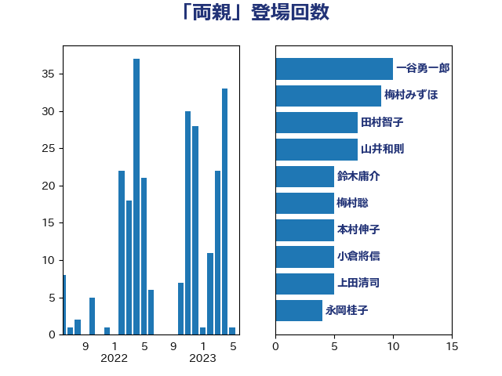

単語「両親」

| 一谷勇一郎 | 日本維新の会 | 10 回 |
| 梅村みずほ | 日本維新の会 | 9 回 |
| 田村智子 | 日本共産党 | 7 回 |
| 山井和則 | 立憲民主党 | 7 回 |
| 鈴木庸介 | 立憲民主党 | 5 回 |
| 梅村聡 | 日本維新の会 | 5 回 |
| 本村伸子 | 日本共産党 | 5 回 |
| 小倉將信 | 自由民主党 | 5 回 |
| 上田清司 | 国民民主党 | 5 回 |
| 永岡桂子 | 自由民主党 | 4 回 |
| 杉田水脈 | 自由民主党 | 4 回 |
| 後藤茂之 | 自由民主党 | 4 回 |
| 嘉田由紀子 | 無所属 | 4 回 |
| 西村康稔 | 自由民主党 | 3 回 |
| 石川香織 | 立憲民主党 | 3 回 |
| 石川大我 | 立憲民主党 | 3 回 |
| 森田俊和 | 立憲民主党 | 3 回 |
| 柚木道義 | 立憲民主党 | 3 回 |
| 山本香苗 | 公明党 | 3 回 |
| 加藤勝信 | 自由民主党 | 3 回 |
| 仁比聡平 | 日本共産党 | 3 回 |
| 齋藤健 | 自由民主党 | 2 回 |
| 長友慎治 | 国民民主党 | 2 回 |
| 鎌田さゆり | 立憲民主党 | 2 回 |
| 鈴木義弘 | 国民民主党 | 2 回 |
| 野田聖子 | 自由民主党 | 2 回 |
| 藤原崇 | 自由民主党 | 2 回 |
| 福島みずほ | 社会民主党 | 2 回 |
| 田中健 | 国民民主党 | 2 回 |
| 熊谷裕人 | 立憲民主党 | 2 回 |
| 末松信介 | 自由民主党 | 2 回 |
| 山崎正恭 | 公明党 | 2 回 |
| 堀井学 | 自由民主党 | 2 回 |
| 土田慎 | 自由民主党 | 2 回 |
| 吉田とも代 | 日本維新の会 | 2 回 |
| 古川禎久 | 自由民主党 | 2 回 |
| 伊佐進一 | 公明党 | 2 回 |
| 中野洋昌 | 公明党 | 2 回 |
| 中島克仁 | 立憲民主党 | 2 回 |
| 三谷英弘 | 自由民主党 | 2 回 |
| 高木啓 | 自由民主党 | 1 回 |
| 高木かおり | 日本維新の会 | 1 回 |
| 音喜多駿 | 日本維新の会 | 1 回 |
| 青木愛 | 立憲民主党 | 1 回 |
| 阿部知子 | 立憲民主党 | 1 回 |
| 阿部弘樹 | 日本維新の会 | 1 回 |
| 長浜博行 | 無所属 | 1 回 |
| 長妻昭 | 立憲民主党 | 1 回 |
| 鈴木宗男 | 日本維新の会 | 1 回 |
| 越智隆雄 | 自由民主党 | 1 回 |
| 赤澤亮正 | 自由民主党 | 1 回 |
| 西野太亮 | 自由民主党 | 1 回 |
| 藤巻健太 | 日本維新の会 | 1 回 |
| 萩生田光一 | 自由民主党 | 1 回 |
| 菅家一郎 | 自由民主党 | 1 回 |
| 荒井優 | 立憲民主党 | 1 回 |
| 自見はなこ | 自由民主党 | 1 回 |
| 米山隆一 | 立憲民主党 | 1 回 |
| 篠原豪 | 立憲民主党 | 1 回 |
| 穂坂泰 | 自由民主党 | 1 回 |
| 稲富修二 | 立憲民主党 | 1 回 |
| 秋葉賢也 | 自由民主党 | 1 回 |
| 石川博崇 | 公明党 | 1 回 |
| 田村憲久 | 自由民主党 | 1 回 |
| 田村まみ | 国民民主党 | 1 回 |
| 源馬謙太郎 | 立憲民主党 | 1 回 |
| 湯原俊二 | 立憲民主党 | 1 回 |
| 渡辺周 | 立憲民主党 | 1 回 |
| 浅野哲 | 国民民主党 | 1 回 |
| 横山信一 | 公明党 | 1 回 |
| 松本尚 | 自由民主党 | 1 回 |
| 東徹 | 日本維新の会 | 1 回 |
| 早坂敦 | 日本維新の会 | 1 回 |
| 日下正喜 | 公明党 | 1 回 |
| 打越さく良 | 立憲民主党 | 1 回 |
| 山田太郎 | 自由民主党 | 1 回 |
| 山添拓 | 日本共産党 | 1 回 |
| 小寺裕雄 | 自由民主党 | 1 回 |
| 宮本徹 | 日本共産党 | 1 回 |
| 宮崎政久 | 自由民主党 | 1 回 |
| 大串博志 | 立憲民主党 | 1 回 |
| 堀場幸子 | 日本維新の会 | 1 回 |
| 古屋範子 | 公明党 | 1 回 |
| 倉林明子 | 日本共産党 | 1 回 |
| 佐藤正久 | 自由民主党 | 1 回 |
| 佐々木さやか | 公明党 | 1 回 |
| 伊藤孝江 | 公明党 | 1 回 |
| 伊東信久 | 日本維新の会 | 1 回 |
| 中川郁子 | 自由民主党 | 1 回 |
| 三木圭恵 | 日本維新の会 | 1 回 |